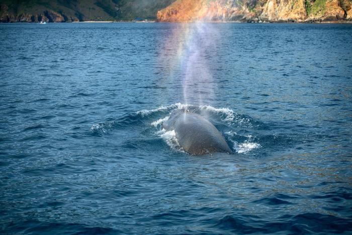

Galerie

Balena albă cu cocoașă

Balena albastră

Balena în larg
Cele mai mari creaturi care au trăit vreodată pe Pământ
Balena este unul dintre cele mai mari animale care au trăit vreodată pe Pământ. Deși trăiește în apă, balena este un mamifer, la fel ca omul. Ea respiră aer, naște pui vii și îi hrănește cu lapte. Balenele trăiesc în oceanele lumii și sunt cunoscute pentru dimensiunile lor impresionante, inteligență și sunetele speciale pe care le folosesc pentru a comunica. Acest site este dedicat cunoașterii balenelor, modului lor de viață și importanței protejării lor.
Există balene cu fanoane și balene cu dinți, fiecare cu caracteristici speciale de hrănire și comportament.
Balenele trăiesc în toate oceanele lumii și migrează pe distanțe lungi, unele parcurgând până la 25.000 km pe an.
Multe specii sunt protejate prin legi internaționale pentru a preveni dispariția lor din cauza activităților umane.
